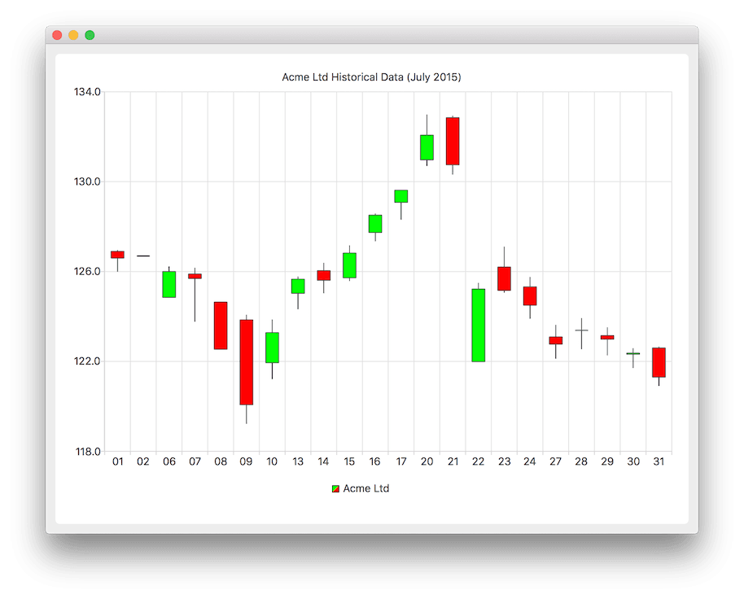

QCandlestickSeries Class
The QCandlestickSeries class presents data as candlesticks. More...
| Header: | #include <QCandlestickSeries> |
| Instantiated By: | CandlestickSeries |
| Inherits: | QAbstractSeries |
Properties
|
|
Public Functions
| QCandlestickSeries(QObject *parent = nullptr) | |
| virtual | ~QCandlestickSeries() |
| bool | append(QCandlestickSet *set) |
| bool | append(const QList<QCandlestickSet *> &sets) |
| bool | bodyOutlineVisible() const |
| qreal | bodyWidth() const |
| QBrush | brush() const |
| bool | capsVisible() const |
| qreal | capsWidth() const |
| void | clear() |
| int | count() const |
| QColor | decreasingColor() const |
| QColor | increasingColor() const |
| bool | insert(int index, QCandlestickSet *set) |
| qreal | maximumColumnWidth() const |
| qreal | minimumColumnWidth() const |
| QPen | pen() const |
| bool | remove(QCandlestickSet *set) |
| bool | remove(const QList<QCandlestickSet *> &sets) |
| void | setBodyOutlineVisible(bool bodyOutlineVisible) |
| void | setBodyWidth(qreal bodyWidth) |
| void | setBrush(const QBrush &brush) |
| void | setCapsVisible(bool capsVisible) |
| void | setCapsWidth(qreal capsWidth) |
| void | setDecreasingColor(const QColor &decreasingColor) |
| void | setIncreasingColor(const QColor &increasingColor) |
| void | setMaximumColumnWidth(qreal maximumColumnWidth) |
| void | setMinimumColumnWidth(qreal minimumColumnWidth) |
| void | setPen(const QPen &pen) |
| QList<QCandlestickSet *> | sets() const |
| bool | take(QCandlestickSet *set) |
Reimplemented Public Functions
| virtual QAbstractSeries::SeriesType | type() const override |
Signals
| void | bodyOutlineVisibilityChanged() |
| void | bodyWidthChanged() |
| void | brushChanged() |
| void | candlestickSetsAdded(const QList<QCandlestickSet *> &sets) |
| void | candlestickSetsRemoved(const QList<QCandlestickSet *> &sets) |
| void | capsVisibilityChanged() |
| void | capsWidthChanged() |
| void | clicked(QCandlestickSet *set) |
| void | countChanged() |
| void | decreasingColorChanged() |
| void | doubleClicked(QCandlestickSet *set) |
| void | hovered(bool status, QCandlestickSet *set) |
| void | increasingColorChanged() |
| void | maximumColumnWidthChanged() |
| void | minimumColumnWidthChanged() |
| void | penChanged() |
| void | pressed(QCandlestickSet *set) |
| void | released(QCandlestickSet *set) |
Detailed Description
This class acts as a container for single candlestick items. Each item is drawn to its own category when using QBarCategoryAxis. QDateTimeAxis and QValueAxis can be used as alternatives to QBarCategoryAxis. In this case, each candlestick item is drawn according to its timestamp value.
Note: The timestamps must be unique within a QCandlestickSeries. When using QBarCategoryAxis, only the first one of the candlestick items sharing a timestamp is drawn. If the chart includes multiple instances of QCandlestickSeries, items from different series sharing a timestamp are drawn to the same category. When using QValueAxis or QDateTimeAxis, candlestick items sharing a timestamp will overlap each other.
See the Charts with Widgets Gallery to learn how to create a candlestick chart.

See also QCandlestickSet, QBarCategoryAxis, QDateTimeAxis, and QValueAxis.
Property Documentation
bodyOutlineVisible : bool
This property holds the visibility of the candlestick body outline.
Access functions:
| bool | bodyOutlineVisible() const |
| void | setBodyOutlineVisible(bool bodyOutlineVisible) |
Notifier signal:
| void | bodyOutlineVisibilityChanged() |
bodyWidth : qreal
This property holds the relative width of the candlestick item within its own slot, in the range from 0.0 to 1.0.
Values outside this range are clamped to 0.0 or 1.0.
Access functions:
| qreal | bodyWidth() const |
| void | setBodyWidth(qreal bodyWidth) |
Notifier signal:
| void | bodyWidthChanged() |
brush : QBrush
This property holds the brush used to fill the candlestick items.
Access functions:
| QBrush | brush() const |
| void | setBrush(const QBrush &brush) |
Notifier signal:
| void | brushChanged() |
capsVisible : bool
This property holds the visibility of the caps.
Access functions:
| bool | capsVisible() const |
| void | setCapsVisible(bool capsVisible) |
Notifier signal:
| void | capsVisibilityChanged() |
capsWidth : qreal
This property holds the relative width of the caps within a candlestick, in the range from 0.0 to 1.0.
Values outside this range are clamped to 0.0 or 1.0.
Access functions:
| qreal | capsWidth() const |
| void | setCapsWidth(qreal capsWidth) |
Notifier signal:
| void | capsWidthChanged() |
[read-only] count : const int
This property holds the number of candlestick items in a series.
Access functions:
| int | count() const |
Notifier signal:
| void | countChanged() |
decreasingColor : QColor
This property holds the color of the decreasing candlestick item body.
A candlestick is decreasing when its open value is higher than the close value. By default, this property is set to the brush color with the alpha channel set to 128. The default color is used also when the property is set to an invalid color value.
Access functions:
| QColor | decreasingColor() const |
| void | setDecreasingColor(const QColor &decreasingColor) |
Notifier signal:
| void | decreasingColorChanged() |
increasingColor : QColor
This property holds the color of the increasing candlestick item body.
A candlestick is increasing when its close value is higher than the open value. By default, this property is set to the brush color. The default color is used also when the property is set to an invalid color value.
Access functions:
| QColor | increasingColor() const |
| void | setIncreasingColor(const QColor &increasingColor) |
Notifier signal:
| void | increasingColorChanged() |
maximumColumnWidth : qreal
This property holds the maximum width of the candlestick items in pixels. Setting a negative value means there is no maximum width. All negative values are converted to -1.0.
Access functions:
| qreal | maximumColumnWidth() const |
| void | setMaximumColumnWidth(qreal maximumColumnWidth) |
Notifier signal:
| void | maximumColumnWidthChanged() |
minimumColumnWidth : qreal
This property holds the minimum width of the candlestick items in pixels. Setting a negative value means there is no minimum width. All negative values are converted to -1.0.
Access functions:
| qreal | minimumColumnWidth() const |
| void | setMinimumColumnWidth(qreal minimumColumnWidth) |
Notifier signal:
| void | minimumColumnWidthChanged() |
pen : QPen
This property holds the pen used to draw the lines of the candlestick items.
Access functions:
| QPen | pen() const |
| void | setPen(const QPen &pen) |
Notifier signal:
| void | penChanged() |
Member Function Documentation
[explicit] QCandlestickSeries::QCandlestickSeries(QObject *parent = nullptr)
Constructs an empty QCandlestickSeries. The parent is optional.
[virtual noexcept] QCandlestickSeries::~QCandlestickSeries()
Destroys the series. Removes the series from the chart.
bool QCandlestickSeries::append(QCandlestickSet *set)
Adds a single candlestick item specified by set to the series and takes ownership of it. If the item is null or it is already in the series, it is not appended. Returns true if appending succeeded, false otherwise.
bool QCandlestickSeries::append(const QList<QCandlestickSet *> &sets)
Adds a list of candlestick items specified by sets to the series and takes ownership of it. If any of the items are null, already belong to the series, or appear in the list more than once, nothing is appended. Returns true if all items were appended successfully, false otherwise.
[signal] void QCandlestickSeries::bodyOutlineVisibilityChanged()
This signal is emitted when the visibility of the candlestick item body outline changes.
Note: Notifier signal for property bodyOutlineVisible.
See also bodyOutlineVisible.
[signal] void QCandlestickSeries::bodyWidthChanged()
This signal is emitted when the candlestick item width changes.
Note: Notifier signal for property bodyWidth.
See also bodyWidth.
[signal] void QCandlestickSeries::brushChanged()
This signal is emitted when the candlestick item brush changes.
Note: Notifier signal for property brush.
See also brush.
[signal] void QCandlestickSeries::candlestickSetsAdded(const QList<QCandlestickSet *> &sets)
This signal is emitted when the candlestick items specified by sets are added to the series.
[signal] void QCandlestickSeries::candlestickSetsRemoved(const QList<QCandlestickSet *> &sets)
This signal is emitted when the candlestick items specified by sets are removed from the series.
[signal] void QCandlestickSeries::capsVisibilityChanged()
This signal is emitted when the visibility of the candlestick item caps changes.
Note: Notifier signal for property capsVisible.
See also capsVisible.
[signal] void QCandlestickSeries::capsWidthChanged()
This signal is emitted when the candlestick item caps width changes.
Note: Notifier signal for property capsWidth.
See also capsWidth.
void QCandlestickSeries::clear()
Removes all candlestick items from the series and permanently deletes them.
[signal] void QCandlestickSeries::clicked(QCandlestickSet *set)
This signal is emitted when the candlestick item specified by set is clicked on the chart.
int QCandlestickSeries::count() const
Returns the number of the candlestick items in the series.
Note: Getter function for property count.
[signal] void QCandlestickSeries::countChanged()
This signal is emitted when the number of candlestick items in the series changes.
Note: Notifier signal for property count.
See also count.
[signal] void QCandlestickSeries::decreasingColorChanged()
This signal is emitted when the candlestick item decreasing color changes.
Note: Notifier signal for property decreasingColor.
See also decreasingColor.
[signal] void QCandlestickSeries::doubleClicked(QCandlestickSet *set)
This signal is emitted when the candlestick item specified by set is double-clicked on the chart.
[signal] void QCandlestickSeries::hovered(bool status, QCandlestickSet *set)
This signal is emitted when a mouse is hovered over the candlestick item specified by set in a chart.
When the mouse moves over the item, status turns true, and when the mouse moves away again, it turns false.
[signal] void QCandlestickSeries::increasingColorChanged()
This signal is emitted when the candlestick item increasing color changes.
Note: Notifier signal for property increasingColor.
See also increasingColor.
bool QCandlestickSeries::insert(int index, QCandlestickSet *set)
Inserts the candlestick item specified by set to the series at the position specified by index. Takes ownership of the item. If the item is null or already belongs to the series, it is not inserted. Returns true if inserting succeeded, false otherwise.
[signal] void QCandlestickSeries::maximumColumnWidthChanged()
This signal is emitted when there is a change in the maximum column width of candlestick items.
Note: Notifier signal for property maximumColumnWidth.
See also maximumColumnWidth.
[signal] void QCandlestickSeries::minimumColumnWidthChanged()
This signal is emitted when there is a change in the minimum column width of candlestick items.
Note: Notifier signal for property minimumColumnWidth.
See also minimumColumnWidth.
[signal] void QCandlestickSeries::penChanged()
This signal is emitted when the candlestick item pen changes.
Note: Notifier signal for property pen.
See also pen.
[signal] void QCandlestickSeries::pressed(QCandlestickSet *set)
This signal is emitted when the user clicks the candlestick item specified by set and holds down the mouse button.
[signal] void QCandlestickSeries::released(QCandlestickSet *set)
This signal is emitted when the user releases the mouse press on the candlestick item specified by set.
bool QCandlestickSeries::remove(QCandlestickSet *set)
Removes a single candlestick item, specified by set, from the series. Returns true if the item is successfully deleted, false otherwise.
bool QCandlestickSeries::remove(const QList<QCandlestickSet *> &sets)
Removes a list of candlestick items specified by sets from the series. If any of the items are null, were already removed from the series, or appear in the list more than once, nothing is removed. Returns true if all items were removed successfully, false otherwise.
QList<QCandlestickSet *> QCandlestickSeries::sets() const
Returns the list of candlestick items in the series. Ownership of the items does not change.
bool QCandlestickSeries::take(QCandlestickSet *set)
Takes a single candlestick item, specified by set, from the series. Does not delete the item. Returns true if the take operation was successful, false otherwise.
Note: The series remains the item's parent object. You must set the parent object to take full ownership.
[override virtual] QAbstractSeries::SeriesType QCandlestickSeries::type() const
Reimplements an access function for property: QAbstractSeries::type.
Returns the type of the series (QAbstractSeries::SeriesTypeCandlestick).